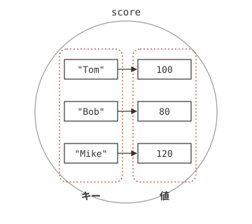
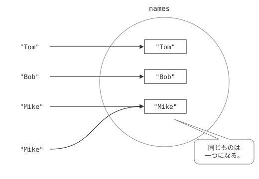
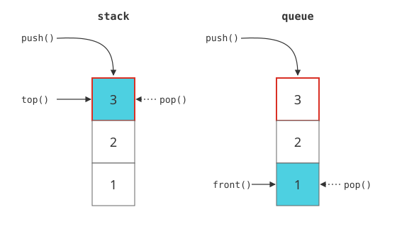

map
連想配列
STLの第三弾として、ここでは、map（マップ）の使い方について説明します。mapは、vector同様、配列の一種です。ただ、vectorが、要素へのアクセスを、0,1,2…といった、インデックスで行うのに対し、mapは、同じ配列ではあっても、数値のインデックスによるアクセスを行うわけではありません。
mapのイメージとして、最もわかりやすい例としてあげられるのが、辞書でしょう。辞書では、調べたい単語のページを調べると、その意味が得られます。この、調べたい単語にあたる部分を、キーと言い、意味にあたるものが、要素になります。
このような記憶方法を、連想記憶（れんそうきおく）と言い、そのため、mapは連想配列（れんそうはいれつ）とも呼ばれます。
サンプルプログラム
では実際に、mapを使ったサンプルを見てみましょう。
#include <iostream>
#include <string>
#include <map>
using namespace std;
int main() {
map <string, int> score; // map のデータ構造を用意する。
string names[] = { "Tom","Bob","Mike" };
score[names[0]] = 100; // キーと値の関連付け① Tom : 100
score[names[1]] = 80; // キーと値の関連付け② Bob : 80
score[names[2]] = 120; // キーと値の関連付け③ Mike : 120
int i;
for(i = 0; i < 3; i++){
cout << names[i] << ":" << score[names[i]] << endl;
}
return 0;
}
Bob:80
Mike:120
このプログラムは名前と点数を関連付けるプログラムです。mapも、他のSTL同様、クラス名と同じヘッダファイルのインクルード（3行目）と、標準名前空間の使用が必要（5行目）です。では、実際にプログラムの中身はどうなっているのでしょうか。詳しく見ていきましょう。
mapクラスの利用
vectorやlistの場合と同様に、mapも使用前に、宣言が必要になります。mapの型の宣言は、以下のようになります。
つまり、最初の型をキーとして、値の型のデータを格納するわけです。このサンプルの場合、8行目の処理がそれにあたります。ここでは、stringをキーとして、int型の値を格納することを意味しています。あとに続くscoreがこのテンプレートクラスのインスタンスとなり、stringとintのマップとして使用できることになります。では引き続き、値の代入を見てみましょう。
score[names[1]] = 80;
score[names[2]] = 120;
10行目から12行目で、値を代入しています。9行目で初期化されているとおり、names[0]～names[2]にはそれぞれ、Tom,Bob,Mikeという値が入っていますから、これにより「Tom → 100」、「Bob → 80」、「Mike → 120」というデータの関連付けがなされます（図5-1.）。
結果は最終的に、14行目～16行目で表示されます。値を出力するときも、[]内に、キーとなる文字列を入れます。要するに、配列のインデックスの数値の代わりに文字列が入っていると思えばわかりやすいでしょう。

図5-1：mapの仕組み
mapクラスの主なメソッド
最後に、mapクラスの主なメンバ関数を紹介しておきます(表5-1)。
| 関数名 | 意味 |
|---|---|
| clear() | 全ての要素をクリアする。 |
| empty() | マップが空であるときに true を返し、そうでないときに false を返す。 |
| erase() | 指定した要素をクリアする。 |
| size() | マップの中の要素数を返す。 |
| find() | マップから指定したキーが一致する要素を探し、イテレータを返す。 |
set
集合
続いて、集合を扱うSTLクラス、set(セット)について説明します。集合とは、「ものの集まり」という意味で、setでは、なかに様々なデータを格納することができます。ここには、要素が重複なく登録されるため、同じデータを複数回登録しても、一度登録されていれば二度と登録されません。つまり、同じデータは、必ずひとつしか登録できないのが、特徴です。
したがって、データの中から、重複をなくし、純粋にどのような要素から構成されているかを調べる際などには有効なクラスです。
サンプルプログラム
では実際に、以下のプログラムを実行してみてください。
#include <iostream>
#include <string>
#include <set>
using namespace std;
int main() {
set<string> names; // set のデータ構造を用意する。
// 値を代入
names.insert("Tom");
names.insert("Mike");
names.insert("Mike"); // 同じ名前をダブって代入させる
names.insert("Bob");
// 登録されている全データを表示
set<string>::iterator it; // イテレータを用意
for(it = names.begin() ; it != names.end(); it++){
cout << *it << endl;
}
// Bob,Steveがデータ内に存在するか調べる
string n[] = {"Bob","Steve"};
int i;
for(i = 0; i < 2;i++){
it = names.find(n[i]);
if(it == names.end()){
// データが、set内に存在しなしい
cout << n[i] << " is not in a set." << endl;
}else{
// データがset内に存在する。
cout << n[i] << " is in a set." << endl;
}
}
return 0;
}
Mike
Tom
Bob is in a set.
Steve is not in a set.
このプログラムは、Tom,Mike,Bobという複数の名前を登録し、登録されているデータをすべて出力したり、あるデータがその中に含まれているかいないかを調べるプログラムです。
setの宣言と利用
では実際に、プログラムの流れを見てみましょう。いままでのSTLのクラスと同様、setクラスは、対応するヘッダファイルのインクルードおよび標準名前空間の利用を必要とします（3行目、5行目参照）。
setの宣言が行われているのが、8行目です。
8行目では、string型のデータを登録する、namesというインスタンスが宣言されています。これにより、ここにはstringの文字列を登録することが可能になります。実際に値を登録しているところが、10行目～13行目です。
names.insert("Mike");
names.insert("Mike");
names.insert("Bob");
見てわかるとおり、11行目および12行目で、Mikeという文字列が二回登録されています。しかし、前述のとおり、この場合、同じデータが複数登録されることはありません。それがわかるのが、15行目から18行目のデータの出力です。
setは、他のSTLクラス同様、イテレータで要素にアクセスすることが可能です。ここでは、全ての要素が出力されていますが、出力された名前は、Bob,Mike,Tomとなっており、重複して登録したMikeも一度しか出力されていません。このことから、setは、データの重複をしないことがわかります。(図5-2.参照)

図5-2：setの仕組み
データの有無を調べる
さらにこのサンプルでは、あるデータが集合の中に存在するか、しないかを調べています。この例では、Bob,Steveというデータの有無が調べられています。まず、データの有無を調べているのが、23行目のfind関数による処理です。
()内に記入したデータの有無を調べるのが、この関数の働きですが、戻り値としてイテレータが返ってきます。もしも、()内のデータが既に登録されていれば、そのデータに該当するイテレータが、そうでなければ、集合クラスのend()メソッドが戻り値として取得できます。
そこで、このプログラムでは、24行目で、戻り値のイテレータによって、値の有無を調べています。その結果、Bobは登録されているので、「Bob is in a set.」と、Steveは登録されていないので、「Steve is not in a set.」と出力されるのです。
setの主なメソッド
最後に、setクラスの主なメソッドを表にまとめておきます。
| 関数名 | 意味 |
|---|---|
| clear() | 全ての要素をクリアする。 |
| empty() | 集合が空であるときに true を返し、そうでないときに false を返す。 |
| erase() | 指定した要素をクリアする。 |
| size() | 集合の中の要素数を返す。 |
その他のSTLクラス
まだまだたくさんあるSTLクラス
今まで、STLの主要なクラスである、vector、list、map、setについて説明してきました。この4つを知っていれば、かなりの処理を行うことができます。しかし、実はSTLはこの他にもまだまだたくさんのクラスが存在します。すべてを紹介するのは不可能ですが、ここでは、その中でも特に利用価値が高い、stackと、queueについて、簡単に説明することにしましょう。
これらは、データ構造のうち、特に大事な、スタックと、キューを表すものです。サンプルプログラムを見る前に、まずそれらの概念を説明しましょう。
スタックとLIFO
まず、スタックの概念について説明しましょう。スタックとは、英語で「積み重ねる」という意味で、最後に入力したデータが先に出力されるデータ構造です。STLではstackクラスがこれにあたります。イメージとしては、積み重ねてある本を探す場合を連想するとわかりやすいでしょう。
積み重ねた本は、最初の方の本は下に、最後の方は上になります。したがって、この中から、目的の本にたどり着くには、まず上の本、つまりあとから積み重ねたものから探すことになります。このようなデータの検索方法を、LIFO(Last in First out)と呼びます。
キューとFIFO
それに対し、キューは、FIFO(First In,First out)と呼ばれ、最初に登録したデータから、順に検索していくデータ形式です。キュー(queue)とは、英語で行列を表す単語です。STLではqueueクラスがこれに該当します。
商品を購入する際に行列を作れば、当然ながら、最初に行列に並んだものが、最初に商品を買えるように、キューでは、登録した古いデータを優先的に取り出します。つまり、スタックとは正反対の概念だということがわかります。
サンプルプログラム
以上を踏まえて実際にstackと、queueを用いたクラスのサンプルをみてみましょう。以下のプログラムを実行してみてください。
、
#include <iostream>
#include <stack>
#include <queue>
using namespace std;
int main() {
stack<int> stk; // スタックのデータを宣言
queue<int> que; // キューのクラス宣言
int data[] = { 1, 2, 3 }; // 登録するデータ
int i;
// データの登録
for(i = 0; i < 3;i++){
stk.push(data[i]);
que.push(data[i]);
}
// データの出力(stack)
cout << "stack : ";
while (!stk.empty()) {
// topで要素を取得し、popでその要素をstkから取り除く(2段階の作業が必要)
cout << stk.top() << " ";
stk.pop();
}
cout << endl;
// データの出力(queue)
cout << "queue : ";
while (!que.empty()) {
// frontで要素を取得し、popでその要素をqueから取り除く(2段階の作業が必要)
cout << que.front() << " ";
que.pop();
}
cout << endl;
return 0;
}
queue : 1 2 3
stack,queueの宣言
他のSTL関連クラス同様、8行目および9行目で、テンプレートクラスstack,およびqueueの宣言をしています。この場合、型の指定が<int>となっているので、扱われるデータは整数となります。
なお、stackは、ヘッダファイル、stack（2行目）、queueは、queue(3行目）が必要になります。標準名前空間で使うという点も他のSTLクラスと同様です。
pushによるデータの登録
stack,およびqueueは、ともに、push()関数によってデータを挿入します。（13行目～16行目）このサンプルでは、1,2,3という数値が登録されます。
データの取り出し
データ登録のメソッドは同一だったstackとqueueですが、データの取り出し方法は異なります。stackでは、top()関数を用いて、queueでは、front()関数を用いてデータを取得します。
topは、スタックに最後に登録された要素を得るメソッドであり、frontでは、キューの最初の要素を得るメソッドです。それぞれ、積み重ねたデータの一番上（top）、行列の先頭(front)を表す言葉を意味するわけです(図5-3.参照)。

図5-3：stackとqueueの仕組み
データの削除
データの削除はpopメソッドを用います。ただし、メソッド名は同一でも、実行結果は異なります。stackは、LIFOなので、最後に登録されたデータが、queueは、FIFOなので、最初のデータがそれぞれ削除されます。これらは、それぞれ、top()関数および、front()関数によって得られるデータに該当します。
また、empty()メソッドは、データが空であればtrue、そうでなければfalseを返す関数です。したがって、どちらのループでも、中身がカラになるまで、データの出力・削除がおこなわれる仕組みになっています。